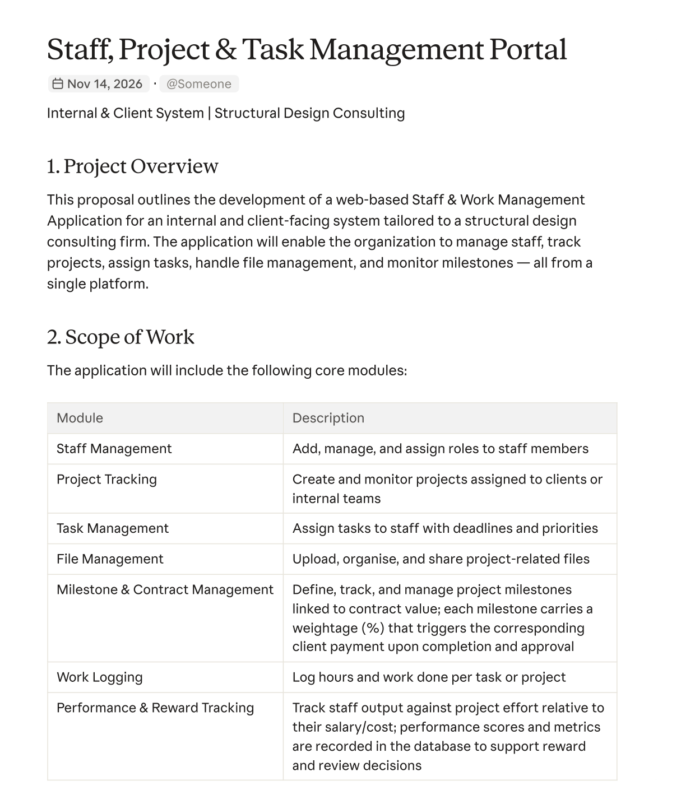
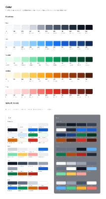

Watch it, then click it
A 50-second guided walkthrough of the product. Or skip the video and use the real prototype.
Fill under Demo access. Try typing a line into New Task.
Open full screen ↗
The walkthrough is a scripted tour built from real screenshots of the running app. The live tab is the actual prototype, with data stored in your browser.
Brief and research artifacts
The inputs I was given, and what each one changed in the product.
The firm wanted a single portal for staff, projects, tasks, files, milestones and payments, used internally and later by clients. Their questionnaire named three problems. I used them as the acceptance test for every screen.
Client Discovery Questionnaire, page 8. Their three problems, in their words. Click a pin to see what each became.




Core UI, my own design system
A generic SaaS system I maintain in Figma: 35 pages, 265 components, 287 variables. I read the file directly so its colors, radius scale and 4/8 spacing became tokens in code instead of eyeballed values.
| Research said | I designed |
|---|---|
| Access: Admin and Employees | Two roles. Team members never see pay rates, contract value or payments. |
| Six delivery stages | A stage tracker on every project. Progress is derived from the stage. |
| Problem 1: profit margin | Reports: revenue, staff cost and margin per project. |
| Problem 2: contribution | Time log feeds on-time rate, utilisation and a performance score. |
| Problem 3: scheduling | Task board, due dates and a Needs attention list. |
| Milestones trigger payment | A confirm step before completing a milestone or changing a payment status. |
End-to-end process
Real timestamps from the commit log and session transcript (UTC+4).
- Read the research
Attached the brief and questionnaire. Set the guardrails: avoid the AI-default look, name a reference.
- Foundation
Scaffold, then Core UI tokens applied at 19:27, then full create / edit / delete for every module. Three commits in 25 minutes.
- Product layer
Roles and route guards, dashboards, the 4/8 spacing pass and the first smart-fill forms.
- Depth
Comments with automatic history, attachments, a redesigned sidebar, ⌘K search, project filters.
- Trust and handoff
Sign-in error states, confirmations and toasts with Undo, a standalone design-system page, generated OpenAPI and SQL, this case study.
Between steps: review in the browser, fix, repeat. Each prompt averaged about four minutes of hands-on time.
Design decisions
Five calls that shaped how it looks and behaves. Every screenshot is live: click the pins.
Four numbers, two charts, one list
The admin dashboard was overwhelming in the first pass. I cut it to what a principal checks each morning and let charts animate in so the eye has an order.
Click a pin or a point on the screenshot
The role decides the product
Admins get a business dashboard. Team members get My Work: their tasks, their hours, their projects. No money anywhere.
Calm tables you can scan
Header band, softly striped rows, a tint on hover. Status is a pill with a dot and a word, never color alone.
Fast to find, safe to change
⌘K finds anything, scoped by role. Critical actions name the consequence before they run, and every change ends in a toast with Undo.
Design the failure, not just the happy path
Sign-in covers empty fields, a bad email, a wrong password, wrong role, deactivated accounts, a 30-second lockout after five tries, Caps Lock and offline. Each state says what happened and offers the next step.
AI-assisted creation
The centerpiece: task and project forms that fill themselves, and show their working.
A task has 11 fields. Nobody wants to fill 11 fields, so the only required work is typing the title, and the title can carry the rest.
One line in, six values out
Every filled field is tagged Auto and the full form stays editable underneath.
Risk decides the friction
A misread ₹2.5Cr would create a ₹2.5Cr project. The value is spelled out and confirmed before anything is created. Tasks get no gate.
What I audited against, and what changed
I ran the forms through an AI-experience-design skill and treated each gap as a bug.
| Gap | Fix |
|---|---|
| Fills were invisible | Auto tags, plus "Why these?" that lists each assumption with its reason and an Undo. |
| Silent when unsure | An amber needs-review note and tag when the project or client can't be told. |
| A misread ₹2.5Cr would create a ₹2.5Cr project | Friction scales with risk: the value is spelled out and confirmed. Tasks get no gate. |
| The modal just closed | An outcome toast with Undo, and a Create another path. |
| A blank form | Starter lines built from the firm's real clients, projects and people. |
| Assignee was a guess | Ranked by skill match, project membership and open workload, with Assign to me. |
When it can't tell, it says so
Type a task with no project and the form does not guess. It flags the field and explains.
Honest note. The parser is deterministic today: rules and heuristics, no model call. Every fill carries a reason, so an LLM can replace parseTaskText later without changing the interface: detected, assumed, needs review.
My AI-native workspace
How the work actually got done, with numbers from the session log.
I direct and judge. Claude builds and checks. The loop is short, and every step ends in something I can see.
Harness and models
- Claude Code (desktop app) as the workbench
- Claude Opus 4.6: first build, 401 turns
- Claude Sonnet 5.5: iteration, 1,200 turns
- 61 prompts in total
Skills I called
- unslop-ui: forced deliberate choices of reference, color, type and layout, and banned the usual AI tells
- ai-experience-design: audited the smart-fill forms for provenance, risk, recovery and accessibility
- Project rules kept in CLAUDE.md
Tools around it
- shadcn/ui CLI for form primitives, themed to Core UI
- In-app browser: 380 actions to click through, read the DOM and screenshot
- Figma file decoder to read 287 variables out of the .fig
- Puppeteer for the screenshots on this page
- 1 parallel fork built sign-in error states while I built the design system
Who did what
- I decided: scope from research, two roles, no-friction forms, what needs confirmation, the visual direction
- Claude did: parsed the Figma file, wrote the code, generated the OpenAPI and SQL, and caught its own bugs, such as a global CSS reset silently zeroing all padding and Esc closing every open dialog at once
* Session activity with gaps under 20 minutes, from the Claude Code transcript.
Prompts that moved it, lightly cleaned for typos
Outcome and next
What shipped, and what I would not claim yet.
Delivered
- A working prototype: 12 screens, 2 roles, full create / edit / delete
- Smart-fill task and project creation with provenance and Undo
- ⌘K search, comments with history, attachments, confirmations
- A standalone design-system page with live components
- Backend handoff generated from one spec: OpenAPI, SQL and a written guide
Not yet
- No usability test yet. I have not measured time-to-create against the 11-field form.
- Data lives in the browser. The API layer is ready but not connected.
- The parser is rule-based. Next: an LLM behind the same interface.
- Next test: three project managers creating five tasks each, old form against one line.
React 19ViteTailwind v4shadcn/uiZustandCore UI tokensOpenAPI